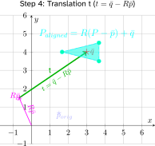
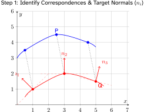
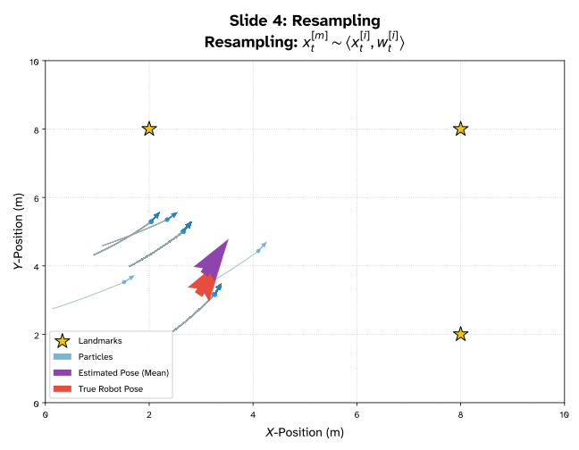
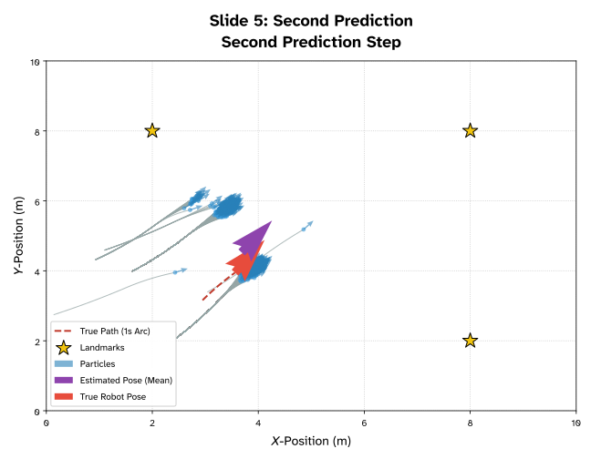
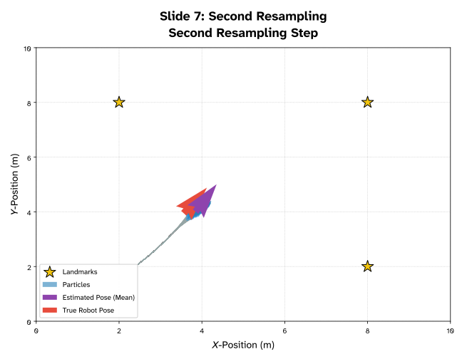

1. SE 423: Introduction to MechatronicsLecture 24: SLAM, Simultaneous Localization and MappingMarius Juston
Monday, April 20th, 2026
2. Review – 5-minute partner discussion
Talk to the person next to you and answer these questions.
- How far are they in their personal project?
-
- What has their biggest challenge been? (other than just having the time to work on it)
- What is their plan for the final project?
-
- If you are talking to someone in the same group, talk to another group!
3. Reminders
Office Hours:
- Monday: 4-6 PM, Neel
- Tuesday: 11-1 PM, Lakshmi
- Tuesday: 1-3 PM, Samuel
- Tuesday: 2-5 PM, Dan & Marius
Lab: Finishing Lab 7 this week. This a 2-week lab! This is the final lab! Afterwards you will just be working on your final project in your teams.
Homeworks:
- Remainder of homework 5 due on Gradescope on April 21, 5PM
- Next homework is primarily the personal project due on April 22, 9AM.
4. Questions?
Homework, Lab, LabVIEW?
5. SLAM
There are a couple of steps to understand SLAM, these will be split into 5 parts focused on 2D LiDAR SLAM (since that is the most important one for our robot):
- The robot turning on, in a completely unknown environment. Why is this hard?
- Localization, “where am I?” (ICP)
- Mapping, from the LiDAR, generate occupancy grids
- The back-end, pose graphs, factor graphs, and loop closure
- Real world situations, dynamic obstacles, ghost obstacles, robust SLAM
6. SLAM
There will be multiple components that will be used in the SLAM:
- Wheel odometry:
-
- Fast, low-latency, but drifts
- 2D LiDAR
-
- High-resolution geometric ground truth, but it is only one slice of the world
- The Front-End:
-
- Converts the raw sequential scans into short-term motion estimates
- The Back-End:
-
- Optimizes the entire history when loops close (loop closure)
- The Map:
-
- A dynamic-aware model the planner can trust
7. Robot startup
8. SLAM
A mobile robot is powered on for the first time inside an unknown warehouse / location
What is unknown?
- No map
- No estimate of prior state (position)
Only has sensor streams! The LiDAR, IMU, Odometry
However, there are 2 questions that must be answered at every time-step to function properly and perform safe planning. What are they?
- Where am I right now? (Localization)
- What does the world around me look like (Mapping)
9. SLAM
For localization, why not just use GPS?
- GPS needs line-of-sight to 4+ orbiting satellites, buildings block this completely
- Civilian GPS accuracy is ~3-5 m, useless when aisles are 1.5 m wide
- Underground environments (mines, subways, basements) receive zero signal
- Indoor RTK and UWB beacons work, but require expensive pre-installed infrastructure
10. SLAM
For mapping why not just download a CAD model?
CAD drawings model the specific intended structure; however, not what the actual room is like today!
Furniture, people, tables, drift daily! Just think about this room!
A single misplaced chair renders a pre-programmed path to be unsafe ( as you saw in lab adding an obstacle, we try to go point to point and even in the wall following sometimes it fails)
We need a map that reflects reality now!
When is it okay though to have a predefined map?
11. SLAM
SLAM, which stands for Simultaneous Localization and Mapping, tries to solve both at the same time.
There is a paradox though. Think about the chicken-and-egg trap…
- To build an accurate map you need to know your exact location at every scan
- To know your exact location, you need an already-existing map to compare against!
Classical robotics solves this separately; SLAM does both at the same time!
Every millisecond:
- Estimate motion
- Predict where the world should be
- Refine both!
12. SLAM
Essentially SLAM is trying to maximize the following probability:
In a single iteration, which do you think that the robot updates first? It’s pose estimate or the map?
maximize
Find the most likely trajectory x and map m given all observations z and controls u
13. SLAM
Why do we need SLAM at all?
What some robotics examples where we want to map and plan trajectories in unknown / updating environments?
- Robot vacuums must map the unknown living room the first time they're switched on
- Self-driving cars use SLAM to reconcile HD maps with new construction, detours, and snow
- Mars rovers have no GPS and no human cartographer - everything is SLAM by necessity!
- Search-and-rescue drones enter collapsed buildings no person has ever mapped before
14. SLAM
What makes a good SLAM system?
- Real-time: the pose estimate must arrive before the robot crashes into the wall
- Globally consistent: no double walls, bent corridors, or duplicate rooms in the final map
- Robust to noise, to moving people, to sensor dropouts, to wheel slip on tile floors
- Memory-bounded: a $50 embedded CPU must hold a 10,000 m² facility's map
- Lifelong: the map must stay valid for weeks as the environment slowly evolves
Which of these five requirements do you think was the hardest to solve historically? Why?
15. SLAM
Global Consistency is the hardest to solve.
In early SLAM, robots relied primarily on Dead Reckoning or incremental scan-matching. Because every sensor measurement has a non-zero covariance, these small errors integrate over time.
The hardest part of global consistency is Loop Closure. Imagine a robot traveling a 1-kilometer loop. Even a tiny error of 0.5° in orientation can result in the robot returning to its starting point and perceiving the wall to be several meters away from where it "should" be.
The system must recognize a previously visited location using only sensor data (often called Place Recognition or Appearance-based SLAM).
16. SLAM
The pose that the SLAM is optimizing for,
Every SLAM algorithm optimizes some collection of these pose triples over time. Since again we are optimizing the robot’s position / trajectory that it has taken.
17. SLAM
The SLAM Loop:
- Read odometry: produce fast prior estimate of new pose
- Read LiDAR: capture current snapshot of the world
- Scan-match the snapshot again recent scans: refine the pose estimate
- Fuse LiDAR correction with odometry prior: publish the best pose
- Updating the map using the newly confirmed pose: repeat
18. SLAM
![Flowchart: LiDAR-inertial SLAM pipeline split into a high-frequency front-end and a low-frequency back-end. Front-end: IMU or odometry interrupts at 100 Hz or more feed IMU preintegration (delta v, delta p, delta R), then motion model prediction, x sub t equals f of x sub t minus 1, u sub t, which publishes a fast pose to the local planner and control. A check asks whether a 10 Hz LiDAR scan is ready; if not, the loop returns to the next IMU interrupt. If so, the back-end runs: point cloud deskewing and voxel filtering (using the motion estimate for un-distortion), scan-to-local-map matching by ICP or NDT, then factor graph optimization with iSAM2 or GTSAM using odometry factors. A map manager handles the local window and global map, feeding the local map back to matching and loop closure factors back to the optimizer. It publishes the global map and a corrected pose, which feeds back to the motion model as drift correction.](L24-25_files/9cebf6684d12.svg)
19. Where am I?
20. SLAM
We need to perform localization, specifically with LiDAR, we are aligning, the newly provided scan with the previous scan centimeters at a time.
Every scan-match boils down to finding one rigid transformation
- Given a source point cloud P (current scan) and a target Q (previous scan or map)
- Find the rotation R and translation t that best overlays P onto Q
- "Best" = minimizes a chosen error metric over all matched point pairs
If we know how the world moved relative to the robot, we know how the robot moved
21. SLAM
The 1D wall example,
Imagine your robot is in a 1D hallway facing a wall,
Time step 1: The target ,
- The robot is at global position 0
- The wall is 5 meters ahead
- The LiDAR records a point at . This is our prior scan
Time step 2: The Source ,
- The robot drives forward 2 meters.
- The wall has not moved, but because the robot is closer the LiDAR measures the wall as being only 3 meters away
- The LiDAR records a new point at , this is the new scan
22. SLAM
If we just blindly drop the new point and the old point into the same local coordinate space without moving them, they do not align!
The algorithm sees a point at 3 and a point at 5!
Now we apply our objective function to find the transformation (ignoring rotation for this 1D example):
The algorithm thus asks: “How much do I need to shift the new point (), so it sits as best it can on top of the old point ()”
What is the optimal in this case?
23. SLAM

24. SLAM
The algorithm tells you that to align the scans, you must apply a translation of +2 meters to the new scan.
That +2 meters is exactly the distance the robot drove forward!
The matches are indeed close to each other in the physical world, but they are offset in the sensors by the exact inverse of the robot's motion.
By finding the transformation () that shifts the new local scan () to overlay perfectly onto the global map (), you are simultaneously calculating the robot's current pose in the world!
25. Three Families of Localization Methods
They differ in how many hypotheses (position estimates) they track and how they correct errors
- Modern SLAM combine all three: ICP for the front-end, filters for relocalization, graphs for the backend
1
Scan Matching (ICP)
- Maintains ONE best guess.
- Iteratively refines it by aligning the latest LiDAR scan to the map.
- Fast, deterministic, fragile at initialization.
2
Particle Filter (MCL)
- Tracks HUNDREDS of weighted hypotheses in parallel.
- Probabilistic, handles kidnapping, but memory-heavy for large maps.
3
Graph Optimization
- Maintains a graph of every past pose + constraints.
- Solves them all simultaneously.
- Today's gold standard for global consistency.
26. ICP
27. ICP
ICP stands for Iterative Closest Point:
Repeat the following 4 steps until the transformation stops changing:
- Data Association: pair each source point with its nearest target point
- Transformation: solve for the that best aligns the matched pairs
- Apply: move the source cloud by that transformation
- Check: if the error has dropped below a threshold stop. Otherwise loop.
28. ICP

29. Variant 1: Point-to-Point ICP (“Vanilla”)
The starting point of the ICP methods,
- Match each source point to its geometrically nearest target point
- Measure the straight-line Euclidean distance between each matched pair
- Sum the squared distances and minimize over
This is exactly what is illustrated in the figure.
What happens if you start the initial guess very wrong, say 90 degree off?
Works very well when two-point clouds start near each other and have clear features.
Falls apart in featureless or repetitive environments (more on that soon)
30. ICP
31. Variant 1: Point-to-Point ICP (“Vanilla”)
For every matched pair , the residual is the 3D (or 2D) vector from to the transformed
The objective function is the sum of the squared residual magnitudes, a least-squares problem!
Given that this is a least-squares problem what is the advantage?
There is a closed-form solution via Singular Value Decomposition (SVD)
No iterative non-linear solver needed for each inner step!
32. Variant 1: Point-to-Point ICP (“Vanilla”)
The P2P ICP can be solved in 4 steps:
- Compute the centroids and of both point clouds
- Build the 2×2 cross-covariance matrix
- Decompose using Singular Value Decomposition
- Rotation: Translation:
- Done!
33. Variant 1: Point-to-Point ICP (“Vanilla”)
Why is this equation quadratic (and therefore solvable exactly) despite containing rotations?
Rotations involve non-linear trigonometry (sines/cosines), which usually require iterative guessing. How do we solve for it exactly in one step?
After shifting both point clouds to their center of mass, the translation becomes zero.
34. Variant 1: Point-to-Point ICP (“Vanilla”)
We must find the Rotation matrix that minimizes the Sum of Squared Errors (SSE) between the centered source points () and target points ().
The geometric properties of rotation matrices cause the non-linear parts of the equation to self-destruct.
35. Variant 1: Point-to-Point ICP (“Vanilla”)
Expand the Quadratic: Since , we expand the error function:
The Cancellation: is a valid rotation matrix, meaning it is orthonormal (). Rotating a vector does not change its length.
Applying the Property:
The Result: The quadratic term completely vanishes, leaving only a linear relationship!
36. Variant 1: Point-to-Point ICP (“Vanilla”)
We can remove the constant terms from the error function!
37. Variant 1: Point-to-Point ICP (“Vanilla”)
With the quadratic term gone, the problem reduces to straightforward linear algebra.
Simplify: The equation is now just the static size of the point clouds (constants) minus a linear term.
To minimize the total error, we must maximize the negative term:
38. Variant 1: Point-to-Point ICP (“Vanilla”)
Using a rule of linear algebra (the cyclic property of the Trace operator), we can rewrite the sum of these vector dot products as the Trace (sum of the diagonal) of a matrix multiplication:
The Trace Trick: We can rewrite this sum of vectors as the Trace of a matrix multiplication using the cross-covariance matrix ():
39. Variant 1: Point-to-Point ICP (“Vanilla”)
The SVD Algorithm: Singular Value Decomposition is explicitly designed to maximize this matrix trace!
We decompose and perfectly extract :
We can ignore , because represents scaling /stretching and we want our rotation matrix to maintain it’s validity.
40. Variant 1: Point-to-Point ICP (“Vanilla”)
The P2P ICP can be solved in 4 steps:
- Compute the centroids and of both point clouds
- Build the 2×2 cross-covariance matrix
- Decompose using Singular Value Decomposition
- Rotation: Translation:
- Done!
41. Variant 1: Point-to-Point ICP (“Vanilla”)
Very simple to implement in code as well!
def p2p_icp(A, B):
"""
Calculates the P2P ICP Closest Point Transformation
Input:
A: Nxm numpy array of source points
B: Nxm numpy array of destination points
Output:
T: (m+1)x(m+1) homogeneous transformation matrix
"""
m = A.shape[1]
# --- Step 1: Compute the centroids ---
centroid_A = np.mean(A, axis=0)
centroid_B = np.mean(B, axis=0)
# --------------------------------------
# --- Step 2: Build cross-covariance matrix -
AA = A - centroid_A
BB = B - centroid_B
H = np.dot(AA.T, BB)
# -------------------------------------------
# -- Step 3: SVD Decomposition ------
U, S, Vt = np.linalg.svd(H)
# -----------------------------------
# --- Step 4: Extract R and t, from SVD ----
R = np.dot(Vt.T, U.T)
if np.linalg.det(R) < 0:
Vt[m - 1, :] *= -1
R = np.dot(Vt.T, U.T)
t = centroid_B.reshape(-1, 1) - np.dot(R, centroid_A.reshape(-1, 1))
#--------------------------------------------
T = np.eye(m + 1)
T[:m, :m] = R
T[:m, -1] = t.ravel()
return T
42. Variant 1: Point-to-Point ICP (“Vanilla”)
- Initial Point Clouds P (blue, offset triangle) and Q (red, offset and rotated triangle), with their calculated centroids and marked and vectors from the origin shown

43. Variant 1: Point-to-Point ICP (“Vanilla”)
- Visualization of Step 2 conceptually centering both point clouds at the global origin to compute the cross-covariance matrix H using the relative positions of points to their respective centroids

44. Variant 1: Point-to-Point ICP (“Vanilla”)
- Visualization of Step 3 SVD decomposition , showing the orthogonal singular vectors U and V as principal axes in the centered frames of reference for P and Q respectively, with illustrative singular values indicating the scale of variance along these directions.
![Two side-by-side plots of centered triangles. In P-space, a tall triangle with its apex at about (0, 1.3) and base vertices near (±0.5, −0.65) has u sub 1 (sigma sub 1) pointing up the y sub P axis, along its long dimension, and the shorter u sub 2 (sigma sub 2) pointing along positive x sub P. In Q-space, the same triangle appears rotated about 90 degrees, with its apex at about (−1.3, 0). v sub 1 points along negative x sub Q toward that apex, and v sub 2 points along negative y sub Q, so the matching axes reveal the rotation between frames.](L24-25_files/4a97b8be154c.svg)
45. Variant 1: Point-to-Point ICP (“Vanilla”)
- Visualizing Step 4 rotation part, showing how the rotation matrix R is conceptually applied to the centered point cloud P' to align its principal axes with those of centered Q', resulting in the rotated, centered shape P''.

46. Variant 1: Point-to-Point ICP (“Vanilla”)
- Visualizing the Step 4 translation vector calculation . The vector t shifts the rotated source centroid directly to the target centroid . Conceptual perfect shape alignment (cyan filled triangle) is shown centered on , aligning with the original Q shape.

47. Variant 1: Point-to-Point ICP (“Vanilla”)
The hidden costs the biggest problem is actually the first step!
- For N source points and M target points, naïve nearest-neighbor search is
-
- Just check for each points between each point
- Solution:
-
- Preprocess the target cloud into a k-d tree, binary space portioning structure construction time
- K-d nearest-neighbor lookup drops to per query! A major speedup!
- Almost every ICP implementation in ROS, PCL and Open3D uses K-D trees internally!
48. Variant 1: Point-to-Point ICP (“Vanilla”)
49. Variant 1: Point-to-Point ICP (“Vanilla”)
Imagine a robot driving straight down a long, flat, featureless corridor!
- The left and right walls look geometrically identical at timestep and timestep
- P2P matches each source point to its nearest target point - but that's sideways, not forward!
What does the algorithm conclude?
'I haven't moved forward at all' and locks the map in place
The fundamental problem: P2P cannot distinguish 'slide along a wall' from 'did not move'
50. Variant 1: Point-to-Point ICP (“Vanilla”)

51. Variant 2: Point-to-Line ICP (PL-ICP)
The key insight is this, in 2D the world is mostly made of line segments (wall, doors, edges of boxes)
Instead of matching a source point to a single target point, match it to the nearest target LINE
For each target line segment, compute the unit normal , (perpendicular to the near wall)
Only the component of the error PERPENDICULAR to the wall is penalized
A robot can now slide freely along a smooth corridor with the algorithm resisting it!
52. Variant 2: Point-to-Line ICP (PL-ICP)
- Residual = projection of onto the surface normal nᵢ
- Motion parallel to the wall contributes ZERO error - the algorithm doesn't resist it, it just slides on the line
- For high-frequency LiDAR, the angle between consecutive scans is tiny, so we linearize, based on
- This turns a hard non-linear problem into ordinary linear least squares!
Parallel motion = zero error,
Perpendicular motion = penalty,
53. Variant 2: Point-to-Line ICP (PL-ICP)

![Plot, Step 5 of point-to-line ICP, apply transform and update, then iterate. The scan's original position, a faint blue curve between y equals 3 and 4.5, has been transformed down onto the red reference curve, whose points are at (1, 1), (3, 2) and (5, 1.5) with faint tangent lines through them. The aligned cyan scan, P sub aligned, has points near (0.5, 0.5), (2.5, 2) and (4.5, 1.6) that lie on those tangent lines but not on the red points. A note reads: points align to structure, not necessarily exact pairs.](L24-25_files/b4dbc9863ebd.svg)
54. Variant 3: Point-to-Plane ICP
How do you think this generalizes in 3D?
- In 3D, a plane is the natural generalization of a line (floor, ceiling, wall surface)
- Every target point qᵢ gets a surface-normal vector nᵢ computed from its local neighbors
- Error is projected onto nᵢ exactly as in PL-ICP, motion along the plane is free
- Converges in far fewer iterations than P2P in structured indoor environments (given that 3D structures provide more constraints / unique presentations)
55. Variant 4: Generalized ICP (GICP)
What if BOTH clouds are noisy? We need uncertainty-aware matching.
- P2P assumes source points are perfect, P2Plane assumes target surfaces are perfect
- Reality: both clouds carry uncertainty - laser range noise, quantization, timing jitter
- GICP attaches a 2×2 (or 3×3) covariance matrix to every point in both clouds
- A point on a flat wall has a 'pancake' covariance: certain perpendicular, uncertain along the wall
- Alignment is now done in probability space, not distance space
56. Variant 4: Generalized ICP (GICP)
- Both source and target have covariances and - we combine them into a weighting matrix
- The resulting form unifies P2P (isotropic noise) and P2Plane (degenerate planar noise)!
- One framework, tunable for the specific sensor and environment you have
We minimize the “Mahalanobis distance” (just look it up, but it’s just the equation above).
![Two-panel figure. (A) Probabilistic surface modeling: a red source curve and a blue target curve, each with a point p sub i or q sub i surrounded by a thin ellipse elongated along the curve, its covariance C sub i sup p or C sub i sup q. (B) Plane-to-plane alignment: the transformed point T times p sub i is joined to q sub i by d sub i equals q sub i minus T p sub i. A larger combined ellipse shows the cost to minimize: d sub i transpose times the inverse of C sub i sup q plus R C sub i sup p R transpose, times d sub i.](L24-25_files/30d3b83396ad.svg)
57. Variant 5: Normal Distributions Transform (NDT)
Throw away points, keep distributions!
ICP spends most of its time on k-d tree nearest-neighbor lookups
NDT eliminates this entirely, no point-to-point matching ever happens
- Step 1: divide the target map into a regular 2D grid of voxels
- Step 2: for each voxel, compute a Gaussian (mean μ, covariance Σ) over its resident points
Scan matching becomes find the transformation that MAXIMIZES the scan's probability under this field
58. Variant 5: Normal Distributions Transform (NDT)
- For each source point pᵢ, evaluate the Gaussian of the cell it falls into
- Sum the log-probabilities (or negative probabilities) across all source points
- Use Newton's method to find the that maximizes this score
Advantage: no neighbor search.
Disadvantage: heavily tuned by the voxel size you choose.
Minimizing negative likelihood = maximizing the match probability
59. Variant 5: Normal Distributions Transform (NDT)
- The target point cloud (Q) is placed into a regular spatial grid (voxels in 3D, squares in 2D). Cells with fewer than a minimum number of points (e.g., 3 points) are usually ignored to prevent mathematical instability

60. Variant 5: Normal Distributions Transform (NDT)
- For every active cell, the sample mean and covariance matrix of the target points are calculated. This transforms the discrete point cloud into a piecewise continuous set of multi-variate Gaussian probability distributions (represented here by covariance ellipses).

61. Variant 5: Normal Distributions Transform (NDT)
- The source point cloud (P) is projected into the voxel grid using its initial, unoptimized transformation. We determine which spatial cell each source point falls into (or its nearest neighbors if using smoothed NDT).
![Plot of the NDT voxel grid, x and y from 0 to 6 with 2-unit cells. Six blue source points P form a shallow arc between y equals 4 and 5, from x equals 1.5 to 4.8. About two units below, two pink Gaussian ellipses mark the target distributions: one tilted diagonally in the cell x 2 to 4, y 2 to 4, and one flat and horizontal in the cell x 4 to 6, y 2 to 4. The point p sub k, at about (2.5, 5), is circled, with an arrow to the tilted ellipse labeled "Evaluate p of p sub k based" on that distribution. The initial pose leaves the source cloud misaligned above the target.](L24-25_files/ab8c79e39b85.svg)
62. Variant 5: Normal Distributions Transform (NDT)
- NDT entirely drops discrete pairs. Instead, it evaluates the probability density of the target cell at the location of the transformed source point . The objective function is to maximize the sum of these probabilities for all source points across the grid.
![Plot of NDT score evaluation, zoomed on cell 1 (x and y from about 2 to 4). Nested red ellipses show the cell's Gaussian, centered at mean mu sub i at (3, 3) and elongated diagonally from lower left to upper right. The transformed point x prime sub i equals T of p sub i comma u sits near (2.4, 3.8), linked to the mean by the vector x prime sub i minus mu sub i. It lies across the narrow axis, outside the contours, so its density is low. Score: s of p sub i is proportional to exp of minus one half times (x prime sub i minus mu sub i) transpose times Sigma sub i inverse times (x prime sub i minus mu sub i).](L24-25_files/9fce9f2c8681.svg)
63. Variant 5: Normal Distributions Transform (NDT)
- An optimization algorithm (typically Newton's Method) calculates the Hessian and gradient of the objective function to update the transformation parameters (rotation and translation). The source cloud "falls" into the high-probability valleys defined by the target's Gaussian mixture.

64. NDT vs ICP - when to use which
- Cartographer (2D indoor) uses ICP-style. Autoware (3D outdoor) uses NDT. The sensor determines the algorithm.
ICP FAMILY
- Best for small point clouds (< 5,000 pts)
- Very accurate when features are strong
- Needs a good initial guess
- k-d tree dominates runtime
- Gold standard for 2D indoor SLAM
- Struggles with smooth, flat, featureless areas
NDT
- Best for dense 3D clouds (> 50,000 pts)
- Smooth cost landscape - larger basin of attraction
- Less sensitive to a bad initial guess
- No k-d tree needed - very fast
- Common in outdoor autonomous vehicles
- Accuracy capped by voxel resolution
65. ICP Family Failure Modes - What Still Breaks
Featureless environments (long smooth tunnels, empty parking lots)
- no geometric handle, huge amount of drift at the end, essentially just relies on odometry
Symmetric environments (hallway intersections that all look identical)
- perceptual aliasing, unknown rotation / translation
Large initial guess errors (>30°)
- any ICP will converge to a wrong local minimum
Dynamic environments with moving objects
Glass, mirrors, and retroreflectors
- The LiDAR returns the wrong values
66. Monte Carlo estimates
67. Why Deterministic ICP Isn’t Always Enough
ICP commits to a single best estimate, so if that estimate is wrong (wrong initialization, symmetric environment), ICP can’t tell you how wrong.
Real scenarios demand multiple simultaneous hypotheses
Given that corridors / floors look similar, a robot could be in Aisle 3 or Aisle 5 or on floor 1 vs floor 2, etc…
You also have the ‘kidnapped robot’, if you lift the robot and drop it elsewhere (like how you do it in lab, where you pick up the robot to take it out of the center area) ICP collapses!
We thus needs an algorithm that maintains and updates a full probably distribution over the available poses!
This is where the Monte Carlo Localization, also known as the Particle Filter!
68. Monte Carlo Localization – The Idea
Given a continuous space, we want to compute the probability that we are at a specific location.
The problem?
It is intractable to generate an exact distribution of the full space for a continuous domain!
To understand where we are we make use of the recursive Bayes filter:
All this is saying is “given my previous location, I have now moved and given the sensor measurement, what is the probability I am at a location?”.
This problem of intractable integration is extremely common is lots of fields such as machine learning and robotics ( this is the underlying process of the unscented Kalman filter as well)
69. Monte Carlo Localization – The Idea
The Prediction:
This calculates where the robot thinks it is based on its last position () and the movement command (). It requires integrating over every possible state at time
The Correction:
This adjusts the prediction based on actual sensor measurements ().
The Normalization
This is the "intractable" part. It requires integrating over every possible state at time to ensure the resulting belief is a valid probability.
70. Monte Carlo Localization – The Idea
Instead of doing an integration we can sample the world!
We disperse around the world a “particle”.
A “particle” is a single hypothesized pose: (xᵢ, yᵢ, θᵢ) with weight wᵢ
- Spawn 500-5000 particles randomly across the known map at startup
- Each tick: move every particle by the odometry estimate (plus noise)
- Then: weight each particle by how well its simulated LiDAR matches the real LiDAR
- Finally: resample, particles with high weight duplicate, particles with low weight die
71. Monte Carlo Localization – The Idea
1
Predict (Motion)
Apply the odometry motion model to every particle, adding process noise to reflect drift uncertainty.
2
Update (Measurement)
For each particle, simulate what the LiDAR would see from that pose.
Compute weight wᵢ as the likelihood of the real scan given the simulated one.
3
Resample
Draw N new particles from the old set, with probability proportional to weight.
High-weight particles duplicate; low-weight particles vanish.
4
Estimate
The mean (or mode) of the surviving particles is the current best pose estimate.
The spread of the cloud is the uncertainty.
72. Monte Carlo Localization – The Idea

73. Monte Carlo Localization – The Idea
![Plot titled "Action / Prediction Step" with the equation: bel bar of x sub t equals the integral of p of x sub t given u sub t and x sub t minus 1, times bel of x sub t minus 1, d x sub t minus 1. On a 10 by 10 meter map with landmark stars near (2, 8), (8, 8) and (8, 2), hundreds of particles spread uniformly in random headings each move along a gray one-second arc. The true robot pose sits near (3.3, 4) heading up-right. The particle mean, near (5.5, 4.3) heading up-left, is far from it, so prediction alone does not localize the robot.](L24-25_files/8534020634ee.svg)
74. Monte Carlo Localization – The Idea
![Plot of the measurement (update) step, with weight correction: w sub t superscript m equals eta times exp of the sum of log p of z sub t given x sub t superscript m. In a 10 by 10 meter map with landmarks at (2,8), (8,8) and (8,2), green range circles around the landmarks intersect near the true robot pose at about (3,3). Hundreds of particles spread across the map have near-zero weight. Only particles near the intersection score high, one at about 0.65. The estimated mean pose lies close to the true pose.](L24-25_files/02243f46b31b.svg)
75. Monte Carlo Localization – The Idea

76. Monte Carlo Localization – The Idea

77. Monte Carlo Localization – The Idea
![Plot: Particle filter after its second measurement update on a 10 by 10 meter map with landmarks at (2, 8), (8, 8) and (8, 2). Green range circles around each landmark intersect near (4, 4.2), where the true robot pose (red arrow) and estimated mean pose (purple arrow) nearly coincide, both heading up and to the right. Most particles form a dense cluster there, with a second cluster near (3.5, 5.8) and a few stragglers. Gray trails show particle paths. All particle weights fall low on the 0 to 0.005 color scale.](L24-25_files/d64adc5f9725.svg)
78. Monte Carlo Localization – The Idea

79. Monte Carlo Localization – The Idea
Each particle’s weight is proportional to the measurement likelihood at it’s hypothesized pose (how likely you would see the LiDAR measurement if you are at the current position)
then with probability
After weighting, we normalize so all weights sum to 1 - they now encode a discrete distribution! This simulates the continuous probability space! Much more computationally efficient!
Resampling draws N new indices from this distribution using a 'roulette wheel' or low-variance sampler
What happens to the filter if we sample only 10 particles in a 10,000 m² warehouse?
How can we improve the filter if we have some kind of prior knowledge of where we will be approximately?
If the particle cloud shrinks to a single tight point, is that always a good thing?
80. Monte Carlo Localization – The Idea
Advantages:
- Handles the kidnapped-robot problem naturally (particles can be re-seeded anywhere)
- Encodes multi-modal beliefs - 'I'm in either Aisle 3 or 5' is expressible
- Requires no assumptions about Gaussian noise or linear motion models
Disadvantages:
- Computationally heavy - every particle does its own LiDAR simulation
- Degenerates over time: surviving particles cluster and you lose diversity (particle deprivation)
- Not well-suited to the mapping side of SLAM - we'll need graphs for that
- Need a initial map / initial state to be able to function appropriately
81. The World
82. The World
Now that we know where we are, we can focus on the mapping!
Given an accurate pose and a raw LiDAR scan , we must place that scan into a persistent world model:
- The model must survive sensor noise (robust) (one bad beam shouldn't create a wall)
- The model must be updatable (new information should refine, not overwrite, old beliefs)
- The model must be compact (we cannot afford to keep every raw scan in RAM forever)
- The model must be queryable by the path planner - "is this cell safe to drive through?"
83. The World
1
Occupancy Grid
Divide the world into square cells. Each cell holds a probability of being occupied.
Standard for 2D indoor SLAM.
2
Point Cloud
Keep the raw (x, y) boundary points themselves.
Sparse, but requires a separate algorithm to determine free space.
3
Feature Map
Store only semantic landmarks: 'corner at (3.2, 1.7)'. Extremely compact but needs reliable feature extraction.
84. The World – Occupancy Grid Maps (OGM)
Discretize the world into a regular 2D array of cells
Each cell mᵢ holds a single number: the probability that the cell is occupied
- P(mᵢ) = 0 → free.
- P(mᵢ) = 1 → wall.
- P(mᵢ) = 0.5 → unknown, never observed.
The cells are independent by assumption (each updated separately - this is a simplification)

85. The World
In a perfect world we would want to compute the Full Map Posterior (used for updating map and the robot’s position for global consistency). If a map has , cells, and each cell can be either “Occupied” or “Free” there are , possible configurations for that map.
Even for a small maps , is larger than the number of atoms in the universe around ()!
To solve this, we assume that the state of one cell does not depend on the state of its neighbor . This is the "Grid Assumption.“
While this isn't strictly true (walls are continuous structures, not random dots), it allows us to treat each cell as a separate estimation problem. Mathematically, this decomposes the high-dimensional joint distribution into a product of many simple, independent marginal distributions:
86. The World
What is a problem with this formulation?
Every new scan multiplies the old cell probability by a new likelihood via Bayes' rule
After 50 scans: , which creates numbers smaller than 10⁻¹⁵!
- Floating-point underflow: the CPU silently rounds these down to 0, erasing all information
- Multiplication is also slower than addition on every processor architecture
How can we transform this into a series of summations instead?
87. The World
To fix this we make use of the Log-Odds trick!
Define the odds of occupancy as the ratio of probabilities
Take the natural log of the odds - this is the log-odds value
Log-odds = 0 means 50% (unknown).
- Positive means occupied.
- Negative means free.
Range is effectively (−∞, +∞), no underflow ever
And crucially, Bayes' update becomes simple addition of log-odds increments!
88. The World
What are the values of for the following situations?
What happens when you are 100% sure there is a wall?
What about if are 100% sure there isn’t a wall?
How does one convert back to the probability ?
89. The World


Log-Odd transformation
Log-Odd inverse transformation
90. The World – Recursive Bayesian Update
The Bayesian Update, is now a simple addition!
Wait what was the Bayesian Update again?
In its raw form, the probability that a cell is occupied at time depends on all previous observations . Using Bayes' Rule and assuming the Markov property, the update looks like this:
= the prior (what we currently believe the map to be)
= Likelihood ( given the current map, how likely is this new data?)
91. The World – Recursive Bayesian Update
To simplify, we look at the ratio of the cell being occupied vs. empty ():
Notice three distinct components here:
The Inverse Sensor Model: (What the current laser scan says).
The Prior: (The initial belief, usually , which cancels out).
The Recursive Belief: (What we already knew).
92. The World – Recursive Bayesian Update
When we take the of the Ratio Form equation, all the multiplications turn into additions, and divisions turn into subtractions:
This yields the exact formula:
93. The World – Recursive Bayesian Update
The sensor-model term is a small positive number (for hits) or small negative number (for passes)
Typical values: +0.9 on hit, −0.4 per pass.
A ghost obstacle slowly decays (more negative), a real wall hardens (more positive)!
This is the single most-executed line of code in a running SLAM system!
94. The World – Inverse Sensor Model
The Inverse Sensor Model tries to compute “given a laser reading, what do we believe about the cells it passed through?”
The forward model asks: “Given a map, what reading should the sensor produce?”
The inverse model asks the opposite: “Given this reading, what does the map look like?”
- Rule 1: every cell the laser beam passed through gets a free-space vote (negative log-odds)
- Rule 2: the cell where the beam terminated gets an occupied vote (positive log-odds)
- Rule 3: cells behind the termination point are unchanged - the laser cannot see through walls
95. The World – Inverse Sensor Model
We can implement this by looking along a single beam:
- From range 0 to (d - ε): probability of occupancy is LOW (clearly free space)
- Near the reported range d ± ε: probability shoots HIGH (a surface was detected here)
- Past the reported range d + ε: probability reverts to 0.5 (unknown — beam cannot see)
The width ε captures sensor range noise, typically 1-5 cm
Tuning these thresholds is a real-world engineering decision specific to your LiDAR model. Tuning these will give you different performance results.
96. The World – Inverse Sensor Model
How does the code know exactly which cells a beam has crossed?
This is the Bresenham's algorithm! (2D ray casing algorithm!)
It's a pure-integer algorithm - no trigonometry, no floating-point in the inner loop
Given start (robot pose cell) and end (hit cell), it efficiently enumerates every cell between them to represent a discretized straight line.
Each enumerated cell gets the “FREE space” log-odds update; the final cell gets “HIT”.
At 360 beams per scan × 10 Hz × thousands of cells per beam, speed matters enormously.

97. The World – Inverse Sensor Model
plotLine(x0, y0, x1, y1)
dx = abs(x1 - x0)
sx = x0 < x1 ? 1 : -1
dy = -abs(y1 - y0)
sy = y0 < y1 ? 1 : -1
error = dx + dy
while true
plot(x0, y0)
e2 = 2 * error
if e2 >= dy
if x0 == x1 break
error = error + dy
x0 = x0 + sx
end if
if e2 <= dx
if y0 == y1 break
error = error + dx
y0 = y0 + sy
end if
end while
YouTube video: Bresenham Line Algorithm for Occupancy Grid (Marius Juston)
98. The World – Inverse Sensor Model
Initial: unobserved cell starts at log-odds = 0 (probability 0.5)
- LiDAR hits it twice: (becoming a wall)
- A passing laser slices through: (still wall, but weakening)
- After 5 clean passes: (the “ghost” has dissolved)
, where ,
99. The World
What is the problem with grid worlds?
They are very resolution dependent!
- For a 100 m × 100 m warehouse at 5 cm resolution: 4 million cells
- Drop to 1 cm resolution: 100 million cells - 25× more memory and 25× more update work
However, what is the problem with increase/decreasing the resolution?
- Too coarse (> 10 cm): doorways and chair legs vanish into “unknown”
- Too fine (< 2 cm): RAM explodes, scan-match speed collapses, and sensor noise dominates
Rule of thumb: pick resolution ≈ the robot's smallest obstacle dimension / 2 (Essentially Nyquist resolution but for grid size)
100. The World
The other way is to represent the world as raw point clouds.
- A point-cloud map stores only the (x, y) boundary coordinates - no cell structure, so it is less dependent on the available scale of the workspace
- Memory scales with the number of obstacles, not the area of the world
- Perfect for sparse environments (a warehouse with mostly empty aisles) or very large environment (going around a city in a car)
Downside: there is no explicit “free space” - the planner must infer it by ray-casting on-the-fly
Often combined with voxel downsampling (discretizing the point cloud into cubes / voxels) to bound memory in feature-dense regions. A bunch of point cloud coordinates are grouped up as a single voxel
101. The World
https://link.springer.com/chapter/10.1007/978-3-030-20867-7_30


102. The World
OCCUPANCY GRID
Advantages
- Explicit free-space representation
- Easy for the path planner to consume
- Natural decay handles dynamic objects
- Most ROS tooling expects this format
Disadvantages
- RAM scales with area, not obstacle count
- Fixed resolution limits detail
POINT CLOUD / SUBMAP
Advantages
- Memory scales with obstacles only
- Can store continuous real coordinates
- Great for outdoor or sparse indoor
- Easy to stitch multiple submaps
Disadvantages
- No explicit free space
- Planner must ray-cast at query time
103. Drift
104. The World
Every scan match injects a tiny error - maybe 0.5 mm, maybe 0.01°, because the sensor is inaccurate
That error is added to the next pose estimate - not averaged against it
After 10,000 matches, errors compound: 0.5 mm × 10,000 = 5 meters of position drift
Rotational drift is even worse - 0.01° × 10,000 = 100° of cumulative heading error
Our carefully optimized local pose is wonderful, but our global trajectory is horrible!
105. The World
Classic failure: robot maps a big circular corridor, returns to the start
The map at the end overlaps the map from the start - but the geometry doesn't match up
The walls appear doubled - the same physical wall drawn at two slightly different positions
Corridors bend, right angles become slight curves, the whole map subtly warps
The map is locally correct everywhere but globally wrong
106. The World


https://www.sciencedirect.com/science/article/pii/S1568494619302339 (Sorry for the horrible image quality!)
107. The World
If you are continuously going in a circle where every meter the wall changes color, and you end up drifting, is there something that might help you figure out if you have drifted or how to correct for that drift?
If the robot can detect that it has returned to a previously-mapped location…
…it immediately knows exactly how much total drift accumulated over the loop!
And it can then distribute that error correction backward through every pose in the loop
This is the single most important trick in modern SLAM - without it, long runs are impossible!
108. The Back-End
109. Modern SLAM: Front-End vs Back-End
FRONT-END
- Runs at sensor rate (10-100 Hz)
- Input: raw LiDAR + odometry
- Output: relative transforms between consecutive poses
- Algorithms: ICP variants, RANSAC
- Job: produce the best short-term motion estimate
- Lives in the “now”
BACK-END
- Runs slower (1-5 Hz) or asynchronously
- Input: stream of relative transforms + loop detections
- Output: globally optimized trajectory
- Algorithms: Gauss-Newton, Levenberg-Marquardt
- Job: redistribute accumulated error globally
- Lives in the “history”
110. Pose Graphs
111. The Pose Graph
Forget point clouds for a moment. Think of SLAM as a physical spring network.
- nodes are the robot's poses at specific timestamps - one per keyframe
- edges are constraints between two poses – “these two nodes should be 1 m apart”
Each edge is a “spring” with a natural length (the measurement) and a stiffness (the confidence)
A loop closure is a new edge that suddenly pulls two distant nodes together
When the graph is “relaxed” to minimum energy, all edge tensions are balanced - and that's the optimal trajectory

112. The Pose Graph
https://federicosarrocco.com/blog/graph-slam-tutorial

113. The Pose Graph
A node xᵢ stores the absolute pose of the robot at time tᵢ: (xᵢ, yᵢ, θᵢ)
When would one want to create a new node? Why that frequency / reason?
Nodes are NOT created every sensor tick - only at 'keyframes' (e.g., after 30 cm of motion)
Keyframing bounds the graph size, keeping optimization real-time
A typical 30-minute mission produces 500-2000 nodes - tractable for modern CPUs
Each node can also anchor a submap, making the graph a skeleton of the world
114. The Pose Graph
An edge zᵢⱼ connects node xᵢ to node xⱼ
It stores the expected relative pose: 'from node i's frame, node j should be here’
What would the sources of edge be from?
Edges come from two sources:
- odometry (between consecutive nodes) and
- loop-closure matches
Each edge also carries an information matrix - the spring stiffness
High information = stiff spring (trustworthy edge).
Low information = loose spring (noisy edge).
115. The Information Matrix
If we trust an edge perfectly in X and Y but not in θ, information is high on X/Y and low on θ
What is the size for a 2D system? What about for a 3D system?
a 3x3 matrix for 2D, 6x6 for 3D
What does it mean for identity matrix?
All constraints are equally stiff, uncertainty is equal for all components
During optimization, each edge's contribution is weighted by its information - noisy edges contribute less
(information = inverse covariance)
High (uncertain) → low (soft spring). Low (certain) → high (rigid spring).
116. Factor Graphs
117. The Factor Graphs
Pose graphs connect poses to poses - but reality has more than just poses to track
Factor graphs have two types of nodes:
- Variables (poses, landmarks, biases)
- Factors (measurements)
Every sensor reading - LiDAR match, odometry, GPS, IMU becomes a factor
Now we can fuse many heterogeneous sensors in one graph!
GTSAM and Ceres libraries are built around this abstraction - and it's the industry standard today

118. The Factor Graphs


119. The Factor Graphs
Every edge contributes an error vector eᵢⱼ - how wrong this edge's prediction is, given the current node positions
The total “strain energy” is the sum of all edge errors, weighted by their information matrices
The job: find the set of node poses X = {x₁, …, xₙ} that minimizes this total strain
This is a nonlinear least-squares problem - we cannot solve it in one step
120. The Factor Graphs
What is the error vector?
It is the error between what the edge predicts and what the current layout sys.
Given absolute poses xᵢ and xⱼ, the implied relative pose is xᵢ⁻¹ ⊗ xⱼ
The edge predicts a specific relative pose, zᵢⱼ
The error is the “difference” between predicted and implied, expressed as a small pose correction
What should this error vector return at a minimum?
A perfect graph has zero error everywhere - every prediction matches every implied pose
121. The Factor Graphs
When you see (not the element-wise product), it means "apply transformation , then apply transformation .“ or “"If I am at , where do I think is based on my current map?"
Depending on how your poses are represented, this operator maps to specific mathematical operations:
- Homogeneous Transformation Matrices: If is a matrix in the Special Euclidean Group , is simply standard matrix multiplication.
- Quaternions/Rotations: If represents a rotation, is the quaternion product or rotation matrix multiplication.
- Translation + Rotation: It accounts for the fact that the second translation must be rotated by the first orientation before being added.
(the log is not an actual log, but maps the transformation matrix into a vector)
122. The Factor Graphs
The standard error formulation simplifies in 2D as:
123. The Factor Graphs
The error depends on θ through and making it non-linear
There is no closed-form solution like the SVD we used for vanilla ICP
We must solve iteratively:
- guess an initial X,
- linearize around it,
- step,
- repeat
Each step refines the guess, eventually the error stops dropping meaningfully
Classic tool for this: the Gauss-Newton algorithm, and its more robust cousin Levenberg-Marquardt
124. The Factor Graphs – Taylor Expansion
Step 1. Linearizing with Taylor Expansion,
Assume our current guess is close to the true optimum
Parametrize the correction as a small perturbation
is the Jacobian, partial derives of the error with respect to ALL poses!
125. The Factor Graphs – Taylor Expansion
The Jacobian Jᵢⱼ has as many rows as the error dimension (3 for 2D poses)
And as many columns as the total number of optimization variables
How many neighbors do each of the pose have?
Edges only have 2 poses, most poses do not have a lot of neighbors
Most entries are ZERO - an edge only touches two poses, so only those columns are non-zero
This sparsity is what makes graph SLAM scale to thousands of nodes!
Modern autodiff libraries (Ceres, GTSAM) compute Jacobians automatically - no manual derivation
126. The Factor Graphs – Taylor Expansion
The resulting matrix is a wide ribbon of zeros, interrupted only by two non-zero blocks:
: The block of derivatives with respect to .
: The block of derivatives with respect to .
127. The Factor Graphs – Taylor Expansion
Block (Derivative w.r.t )
We differentiate the error with respect to (translation) and (rotation):
Translational part:
Rotational part: requires deriving the rotation matrix .
128. The Factor Graphs – Taylor Expansion
Let be the derivative of w.r.t .
Putting it into a matrix:
(Note: )
129. The Factor Graphs – Taylor Expansion
Block (Derivative w.r.t )
This one is much simpler because appears linearly in the error function and isn't rotating any coordinate frames.
Putting it into a matrix:
130. The Factor Graphs – Gauss-Newton Normal Equations
Step 2: Gauss-Newton Normal Equations
Substituting the Taylor approximation and minimizing yields a linear system in
The matrix aggregates the “stiffness” of every edge at the current guess
The vector aggregates the “pulling force” of every edge at the current guess
Solve once, apply to all poses, re-linearize, repeat until convergence
, where and
The heart of every graph-SLAM solver
131. The Factor Graphs – Gauss-Newton Normal Equations
: Total number of poses (nodes) in your graph.
: Degrees of freedom per pose (for 2D, , representing ).
: Dimension of a single edge measurement (for a 2D relative pose constraint, ).
- Error Vector ():
- Information Matrix ():
- Jacobian Matrix ():
- Global Info Matrix ():
- Global Info Vector ():
- Update Vector ():
, where and
The heart of every graph-SLAM solver
132. The Factor Graphs – Gauss-Newton Normal Equations
Gauss-Newton is fast near the optimum but unstable far from it, can be near-singular
Levenberg-Marquardt (L-M) adds a damping factor to the diagonal of H:
Large → behaves like slow, safe gradient descent (small, conservative steps)
Small → behaves like fast Gauss-Newton (full-size, ambitious steps)
is adaptively tuned at runtime, shrunk on successful steps, grown after failures
(you just need to know that it is used for robustness)
133. The Factor Graphs – Gauss-Newton Normal Equations
How would one solve this system of equation for ?
, where and
What is the problem? Think computationally.
For a 10,000-pose graph in 2D, has the size of , is a 30,000 × 30,000 matrix - 900 million entries
Dense inversion would take minutes and gigabytes - completely infeasible!
But remember that was sparse, so 99.9% is zero and is thus also sparse!
Sparse solvers exploit this structure: they only store non-zeros and skip zero rows/columns!
Cholesky decomposition of a sparse runs in milliseconds, not minutes
134. Loop Closure
135. Detecting Loop Closure
Loop closure:
- The front-end periodically compares the current scan against historical keyframe scans
- Candidate matches are ranked by scan-match score (after an initial coarse filter)
- A candidate is promoted to a loop closure only when its score exceeds a strict threshold
- To avoid false positives, some systems also require geometric consistency across nearby frames
- When confirmed, a new edge is added connecting current pose back to the matched historical pose
136. Detecting Loop Closure
![Software architecture diagram of the SLAM system. External C/C++ LiDAR and odometry processes write to shared memory (/lslam_lidar: 228 by 2 float32 points per sweep; /lslam_odom: x, y, theta) and signal Python reader threads via semaphores. Readers feed lidar_q and odom_buffer to the SLAM main loop, which updates the iSAM2 factor graph. The main loop sends new keyframe indices through loop_in_q to a LoopClosureWorker thread. The worker reads keyframe scans and poses under slam_lock and returns relative pose and RMSE through loop_out_q.](L24-25_files/efe5ec454a87.svg)
137. Detecting Loop Closure – Coarse Filter
The initial Coarse Filter,
The front-end periodically compares the current scan against historical keyframe scans.
Comparing the current scan to every single historical frame is computationally too expensive for real-time systems.
What can we do? (hint: technique used in ICP)
We apply an initial coarse filter using spatial data structures like KD-Trees to find poses within a specific radius (e.g., 2.5 meters) before running full alignment.
For our specific robot what another filter could we use?
We also apply a heading limit filter to instantly reject candidates facing a completely different direction. We can do this because our LiDAR is only 240 degrees of FOV, so it can’t see the back.
138. Detecting Loop Closure – Voxelization
Raw LiDAR scans produce thousands of points per sweep (for more expensive sensors, ours only has 228!), many hitting the same flat surfaces redundantly.
What can we do to reduce the amount of computation?
Why process 50 points on a flat wall when 1 point could reliably represent that entire local area?
Voxelization divides the 2D space into a grid of 'cells' (voxels).
All points falling inside the same cell are averaged into a single representative point, massively speeding up the scan-matching pipeline.
This can divide the number of LiDAR points but 10x (thus 10x or more computational gains!)
If we set the voxel size too large (e.g., 1 meter), how would that affect our ability to detect small obstacles like chair legs?
139. Detecting Loop Closure – Scan-Match Scoring
For Scan-Match Scoring
We start with an initial guess (often from high-frequency IMU/odometry integration) and transform the incoming scan points into the global frame.
To measure the error, we need to know which new point corresponds to which historical point in the map.
Instead of checking every single point in the map, we use the cached KD-Tree to rapidly find the two nearest neighbors for each transformed point.
140. Detecting Loop Closure – Scan-Match Scoring
Before calculating how to correct the pose, we must filter out bad associations (e.g., points hitting a person walking by).
- First, we reject target pairs that are too far apart, as they likely bridge a gap rather than form a solid surface (objects too far away for the LiDAR or such potential errors).
- Second, we sort the residuals and drop the worst percentage (e.g., rejecting the top 15% of errors). This is called Trimming or Trimmed ICP.
- Finally, we apply Huber Loss weights: small errors get a full weight of 1.0, while large errors are scaled down inversely to their magnitude.
Why is scaling down the weight of a mildly large error via Huber Loss often better than simply applying a hard cutoff and deleting the point entirely?
Huber Loss prevents the complete loss of information for mildly large errors
141. Detecting Loop Closure – Scan-Match Scoring
The Huber loss is a very common robust loss metric that ensures that we do not give too much weight to large errors,

142. Detecting Loop Closure – Scan-Match Scoring
In scan-matching, an inlier is a point from the current LiDAR scan that successfully and reliably aligns with a known physical surface in the historical map.
Conversely, an outlier is a point that fails to match the map, usually caused by dynamic objects (like a walking person), sensor noise, or newly placed obstacles.
For an inlier to be considered valid in our PL-ICP algorithm, it must pass a strict distance threshold-meaning its perpendicular distance to the target line segment must be extremely small.
It is also to make it ensure that it also pass geometric sanity checks, such as ensuring the two target points forming the reference line are close together, proving they represent a solid, continuous surface rather than empty space.
Finally, valid inliers are the only points used to calculate the final RMSE (Root Mean Square Error) score; outliers are discarded to prevent them from artificially inflating the error of an otherwise good pose guess.
143. Detecting Loop Closure – Scan-Match Scoring
We then perform the factor-graph optimization with the ICP matching pose.
Once the iterative optimization converges, the system must decide if the resulting match is trustworthy enough to alter the map.
It calculates the RMSE (Root Mean Square Error) of the residuals, but only for the valid inlier points.
It computes the Inlier Ratio: the fraction of the original LiDAR points that survived the strict filtering and weighting process.
A candidate is promoted to a confirmed loop closure only if it has a low RMSE (a tight geometric fit) and a high Inlier Ratio (plenty of overlapping geometry).
Can you describe a real-world scenario where the optimizer returns a perfect RMSE of near 0.0, but a terrible Inlier Ratio of 5%?
You only have 2 valid LiDAR points, being face on to a corridor with a 180-degree FOV.
144. Detecting Loop Closure – Scan-Match Scoring

145. Detecting Loop Closure
Once the scan has passed all the criteria's and has been added to the Factor Graph,
The new loop closure edge carries a HUGE initial error (equal to the accumulated drift)
The L-M solver sees this massive residual and is compelled to reduce it!
To minimize total energy, it distributes the correction proportionally across every pose in the loop
The result: the entire trajectory 'snaps' into global consistency in a handful of iterations
Double walls collapse into single walls, curved corridors straighten, the map becomes useful again!

146. Detecting Loop Closure
The reason why we distribute the error to all the nodes for the loss is the following:
If we dump all the correction into a single pose, every intermediate pose now has an inconsistent neighbourhood ( everything has shifted by a huge amount).
Local accuracy suffers to restore global accuracy - that's a bad trade
By distributing proportionally, each intermediate pose moves by a small amount
Local relationships (each short-range edge) remain nearly satisfied - we preserve local accuracy
This is why L-M minimizes the sum of squared errors: it naturally spreads the blame

147. Scaling
148. Scaling
So far we've assumed a single large 2D array holding every cell of the world
The problem is that when, the graph optimizer snaps the trajectory ( through loop closure), ALL prior raycasts become misaligned
Every deposited cell was computed assuming the old drifted pose - now those poses have moved
You can’t “un-bake” already-written cells without replaying every scan - way too expensive
The single-global-grid architecture is fundamentally incompatible with loop closure
149. Detecting Loop Closure
The solution, divide the environment into tiles — typical submap size: 10 m × 10 m at 5 cm resolution
As the robot moves, it builds the local submap (small grid, few scans)
When the robot crosses the edge of the current submap, it freezes it and starts a new one
Each submap is independent - no information is shared across boundaries during construction
Critically: each submap is anchored to a node in the pose graph
![Four-panel comparison of one global grid versus submaps for loop closure. (a) A single occupancy grid: the robot path runs from start o around to end c, but accumulated drift leaves a misaligned wall and gap alpha, so correction is ambiguous (A or B). (b) The resulting 3D point cloud is smeared and doubled. (c) The same path covered by small, overlapping, rotated submaps anchored to path nodes; after loop closure, the submaps shift rigidly so c meets o. (d) The resulting point cloud is clean and consistent.](L24-25_files/cf6f27c70b4b.svg)
150. Detecting Loop Closure
Each submap is a rigid object pinned to one pose node
When the pose graph optimizer moves that node, the ENTIRE submap moves with it - translation + rotation
No raycasts need to be re-baked. No cells re-computed. The submap is just transformed as-is.
The global map is implicitly re-assembled on the fly at render time
151. Detecting Loop Closure
When the user (or planner) requests the current global map the system fetches every submap + its anchored pose from the optimized graph
Transforms each submap into the world frame using the current node pose
Blends overlapping cells by taking maximum occupancy (or averaging probabilities)
Result: a fresh, geometrically-consistent global map, rebuilt in milliseconds
152. Detecting Loop Closure

https://wilselby.com/2019/06/ouster-os-1-lidar-and-google-cartographer-integration/